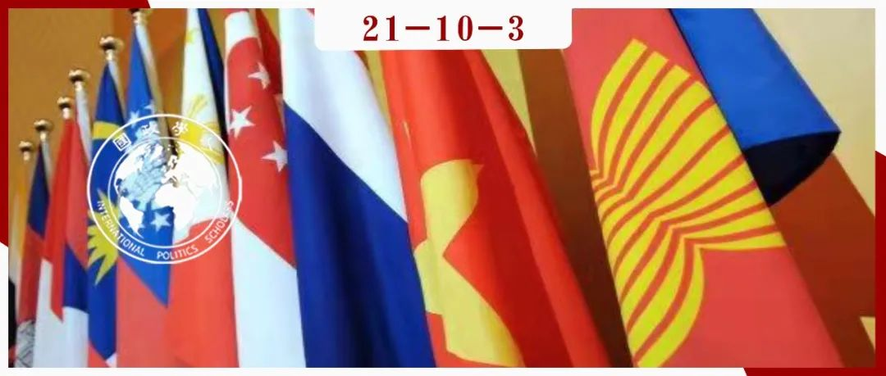
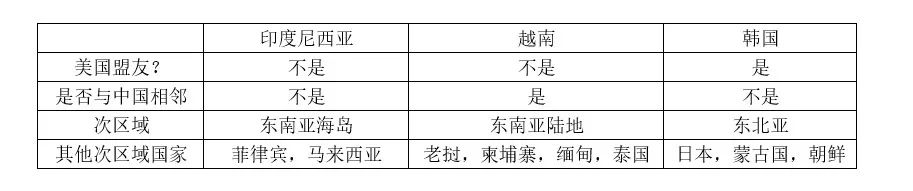
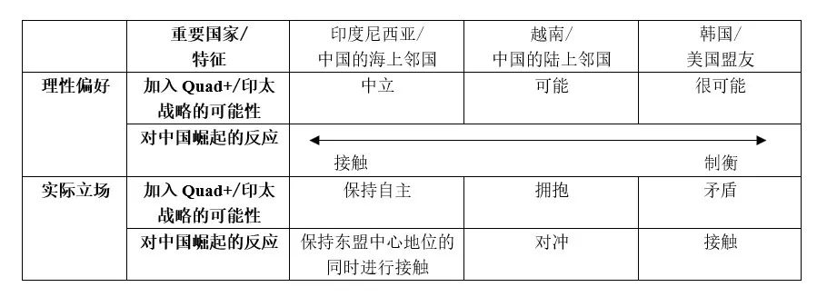

收录于合集 #区域国别 9个

作品简介
作者： Sung Chul Jung，韩国明知大学政治学和外交学系副教授，主要研究方向为国际关系、外交政策分析和东亚政治；Jaehyon Lee，峨山政策研究院高级研究员，主要研究方向为东南亚和东盟、东亚地区主义和东盟-韩国关系；Ji-Yong Lee，韩国启明大学助理教授，主要研究方向为中国政治和东亚国际关系。
编译： 陈思涵（国政学人编译员，中山大学国际关系学院）
来源： Sung Chul Jung, Jaehyon Lee and Ji-Yong Lee(2021). The Indo-Pacific Strategy and US Alliance Network Expandability: Asian Middle Powers’ Positions on Sino-US Geostrategic Competition in Indo-Pacific Region. Journal of Contemporary China , 30(127), 53-68. https://doi.org/10.1080/10670564.2020.1766909.
归档： 《国际关系前沿》2021年第10期，总第37期。

内容提要
本文主要探讨了非“四方安全对话（Quad）”国家的亚洲中等强国在中美竞争中面临的战略困境及其针对中美在印太地区的地缘战略竞争所采取的差异化立场。作者选取了印度尼西亚、越南和韩国三个案例，对比其对中国崛起和印太战略的偏好与立场，并对美国联盟网络是否具有扩展性进行了分析。
文章导读
01
引言
近年来， 印太地区实质上成为了中美地缘战略竞争的主战场 。随着中美地缘战略竞争的加剧，亚洲国家在制衡和对冲这两个大国方面面临越来越多的战略挑战。本文尝试探究美国领导的印太战略是否会导致一个针对中国的广泛联盟网络，重点关注在中美竞争中面临战略困境的非“四方安全对话”亚洲国家，尤其考察了亚洲中等强国——印尼、越南和韩国对正在崛起的中国和印太战略的立场。这些国家现在的目标是“驯服”而非“遏制”中国，尽管其对美国印太战略的反应略有差异。换句话说，它们不愿加入美国的印太战略，虽然三国在军事联盟和领土争端方面与中美两个大国的关系不同，但 印尼、越南和韩国在应对印太战略时分别采取了“自主”、“拥抱”和“矛盾”的立场 。这表明美国及其三个伙伴日本、印度和澳大利亚尚未成功招募新成员加入旨在增加地区稳定性的联盟，这主要是因为正在衰落的霸权（似乎）削弱了其对自由主义国际秩序的承诺，以及崛起的挑战者潜在的反对和惩罚。
本文主体分为三部分，首先考察了亚洲国家在中美竞争中面临的困境，接着分析了印尼、越南、韩国三个亚洲中等强国对中国崛起和美国印太战略的立场，随后探讨了在偏好“基于规则的秩序”的中等强国之间建立联盟的动机和挑战。
02
非“四方安全对话”国家在中美之间面临的困境
1.崛起的中国力量及其进取外交
自20世纪90年代以来，亚洲国家见证了单极体系在全球的崛起，这伴随着地区大国之间的关系日益紧张的局面。在这段时期内，美国作为全球霸权选择在经济和外交上与中国接触，期待后者向自由和负责任的利益攸关方过渡。结果中国迅速崛起为经济大国并成为了美国的唯一潜在竞争者。根据均势逻辑，一个地区国家的崛起将刺激其邻国增加军备或结盟，但直到21世纪初，鲜有亚洲国家采取明显战略行动以对抗中国。这一“制衡不足”的现象困扰着国际关系学者，其中一些人因而开始探究共享儒家文化对亚洲国家间关系的影响。
过去十年，亚洲国家日益关切中国的回归，中国也展开了对邻国尤其是东南亚国家的进取外交。一些现实主义者坚持认为21世纪的中国将走19世纪美国的道路。亚洲小国的相对弱势将使其在面对中国的强大经济影响时更加敏感和脆弱。作者认为，现在很少有人期待亚洲国家之间的经济相互依赖能够解决它们之间的历史、领土竞争与冲突。
2.美国对亚洲的不确定承诺
过去四十年，许多自由主义亚洲国家期待美国能够作为离岸平衡手以稳定亚洲，事实上自冷战结束后美国一直在全球政治中保持着前所未有的地位。单极体系的持续存在主要是由于美国太过强大，以至于其他国家，甚至是大国，无论单独还是集体，都无法与美国抗衡。令人惊讶的是，21世纪初全球霸权面临的最严重威胁来自非国家行为体。然而，美国领导下的国际秩序最近面临的挑战则来自内部而非外部。随着美国从2008年经济危机中复苏以来，美国民众越来越对美国的全球领导力和责任持怀疑态度，也愈发反对自由贸易和对外干预。因此，以“美国优先”为口号的前总统特朗普将美国引向另一方向，如退出跨太平洋伙伴关系协定和巴黎气候协定，警告其盟友不要成为地区安全的“搭便车者”。由于美国的承诺削弱和投入资源减少，其许多盟友预期美国将更多地走向孤立，而不是与更多国家结盟。
3.非“四方安全对话”国家对中美竞争的反应：案例选择
作者对如何选择本研究的案例进行了探讨。 亚洲国家位于进取的中国和摇摇欲坠的美国之间，正寻找一种方式以同时确保安全和促进繁荣。 它们怀疑崛起大国的意图和衰落大国的承诺，但又必须同时考虑前者提供的经济机会和后者给予的安全保障。这使亚洲国家陷入了需要对中美竞争作出复杂反应的两难境地，这一困境也转化到其对印太战略的立场上。
一些亚洲国家赞同美国领导的印太战略，其他国家仍对其保持谨慎态度，以免造成与中国的紧张关系。它们试图确保自己的经济与安全利益，同时减轻在大国竞争中面临的潜在损失。其立场可总结为既制衡又接触中国。相比在中美之间“选边站”，许多中等强国和小国寻求多边地区合作，以维持基于规则的秩序，避免卷入大国军事冲突。
此外，将亚洲国家的立场简单定义为“制衡”和“接触”又是危险的，因为这样做可能会忽视它们之间在印太战略上不同的和共同的利益。 亚洲国家围绕“一带一路”倡议和印太战略有着多种多样的利益和立场，这在很大程度上取决于其政治和经济状况。若不考虑其在政治认同、国家实力、地缘政治和经济地位上的差异，就很难厘清大多数非“四方安全对话”国家的共同点以及它们在未来可能会如何改变立场。
考虑到上述差异，作者对亚洲国家进行了分类，然后选择了三个值得关注的案例——印尼、越南和韩国，这些国家能够清楚代表亚洲国家在印太战略上的特点与立场。 它们位于从东北亚到南海再到印度洋的地缘政治、地缘经济瓶颈，每一个国家都代表着安全和经济的不同优先级。 表1展示了非“四方安全对话”国家的不同特点和代表的不同次区域。印尼作为东南亚最大的国家，传统上代表着东盟国家尤其是东南亚海岛国家的集体观点，尽管不以任何官方方式。越南代表着东盟新声音，并迅速成为东盟的核心国家之一，同时代表着老挝、柬埔寨、缅甸、泰国等东南亚陆地国家的声音。韩国是美国的传统盟友，代表着东北亚国家的战略考量，且由于朝鲜核开发以及与日本的竞争，其战略认知与东南亚国家不同。
表1 亚洲中等强国的三个案例

03
非“四方安全对话”国家对印太战略的反应：印度尼西亚、越南和韩国
亚洲国家在印太战略和“一带一路”倡议方面既有共同利益，也有分歧。 总的来说，它们在安全稳定、经济繁荣、维持现有海洋秩序方面有着共同利益；但由于地缘政治和经济的具体条件和环境不同，它们会将外交政策的优先事项放在不同问题上。国家认同、历史、政权类型等国内因素使这种差异更加复杂化。
本文通过三个案例考察亚洲非“四方安全对话”国家的反应，主要分析其安全关切、对中美竞争的现有立场，关注其感知到的中国“威胁”和印太地区的海洋秩序。在此基础上，作者评估了每个国家对中国在该地区的进取挑战的“理性”反应，以及每个国家参与印太战略和Quad+的可能性。最后，除了假定的理性偏好，作者还考察了每个国家的实际立场。
1.首要安全关切和感知到的中国“威胁”
**
**
印尼面临来自强大中国的战略和经济挑战。中国的经济实力既是各亚洲国家促进经济增长的大好机会，也是一个挑战，因为它们怀疑中国的经济援助带有附加条件。同时，与中国在南海的领土争端是印尼和其他一些东盟国家最严重的安全“威胁”。当除了美国没有其他力量可以制衡中国时，印太战略对印尼和包括越南在内的其他东盟国家而言是有用的。
**
**
越南认为中国是一个严重“威胁”，并且寻求在南海地区的均势。一些人认为，鉴于越南对印太战略的态度和该国所处的战略环境，其有望成为“四方安全对话”第五个成员的候选者。如果“四方安全对话”是为了遏制中国，考虑到中越之间漫长而动荡的历史以及目前在南海的争端，没有任何国家比越南更有决心在这方面与另外四国联合。越南政府一直在加强与“四方安全对话”国家的合作。
韩国代表了中国“威胁”问题的另一个特点。韩国是美国的盟友，同时也是中国的战略伙伴。在安全方面，韩国必须以韩美同盟为基础应对敌对的朝鲜；但考虑到中朝关系，韩国也要与中国建立合作关系。此外，中国目前是韩国的第一大贸易伙伴，双方在政治、经济、社会方面的密切关系使韩国社会中产生了亲中情绪。但在21世纪头十年，韩国的公众和精英都将中国视为一个愿意承担风险的“修正主义者”。这一负面观点产生的原因是中国谴责并“报复”了韩国2016年在本土部署萨德系统的决定。尽管如此，韩国对中国意图增加的怀疑未导致其倾向美国，2016年特朗普当选美国总统后，韩国开始担心韩美关系和美国对东亚政策的不确定的未来。
2.对中国“威胁”的反应和加入印太战略的可能性：理性偏好与实际立场
从印尼的角度来看，其与东盟倾向于采取一种非常微妙的战略以应对印太战略，因为它们认为印太战略既有机遇也有挑战——其制衡中国的可能性有利于印尼的利益，但由大国支持的印太新地区架构也是一个战略负担。 印尼的战略是应对印太战略和“一带一路”倡议的竞争。 印尼于2017年开发了“印太展望”（IPO）的概念。这一概念符合东盟国家的利益，因为它仍优先重视东盟在该地区的中心地位和该地区基于规则的秩序。更重要的是，尽管印尼使用了相同的印太概念，但它拒绝“四方安全对话”领导下的印太战略和中国的“一带一路”倡议。相反，它优先考虑现有的区域多边合作机制，尤其是东亚峰会。多边主义是弱者的武器，例如东盟和印尼在区域环境中对抗美国和中国。“印太展望”的目的是吸引大国及其倡议加入到东盟占有中心地位、以东盟方式统治的现存多边框架中。因此，印尼试图中和或抵消大国的竞争性倡议，并且拯救东盟相对弱势的战略地位和维护利益。
越南在印太战略和“四方安全对话”上的立场相当模棱两可。至少，越南政府认为其在官方文件和讲话中采用“印太”一词没有任何困难。 一方面，越南的立场与印尼不同，后者尝试与印太战略保持距离并且试图创造自己的印太愿景。另一方面，越南也不同于韩国，后者尝试尽可能避免印太概念，并且对其态度模糊。 尽管越南更积极地接触地区大国及其项目，其最终目标是扩大战略自主权和无限制的战略机动空间。这一战略既不意味着越南完全致力于印太地区，也不意味着越南反对美国的战略，其只是利用印太战略以对抗中国在南海的“威胁”。鉴于其外交政策传统，不能期望越南对美国的印太战略作出全面承诺。
与上述其他国家一样，韩国对印太战略的立场也不明确。印尼正试图开辟自己的印太替代方案以避免陷入困境，越南对印太战略更为积极， 而韩国对印太战略的态度最好被形容为“拖延”（foot-dragging）。韩国既不拒绝也不完全赞同美国领导的印太战略。 韩国对美国对亚洲的承诺持消极看法，使其自2017年末以来一直在思考（不）加入印太计划将产生什么影响。韩国对这一地缘战略计划提出了严重质疑。第一，韩国不确定印太战略的目标是否是遏制中国，对东亚再次爆发冷战持保留态度。第二，韩国不愿意作为后发者加入地区愿景。最后，韩国担心美国是否会继续在强调印太地区基于规则的秩序方面发挥主导作用。
3.解释“理性”与“实际”之间的差异
本文作者进一步指出，上述三个亚洲中等强国对印太战略的实际立场，与其应对中国对地区秩序的进取挑战的假定“理性”偏好不同。 作为美国的盟友和支持基于规则的自由主义国际秩序的自由民主国家，韩国对印太战略持有矛盾立场并对加入Quad+犹豫不决。相比之下，越南似乎是美国领导的印太战略的积极参与者，也是加入Quad+的候选者。印尼则一直寻求其在东盟中心地位方面的自主地位。
表2 三个中等强国对中国和印太战略的偏好与态度

作者研究指出，三国的不同反应有其不同原因。在解释“理性”和“实际”之间的差异时，三个案例的一个共同特点是它们在大国竞争中的小国命运的历史背景。印尼三种不同的外交传统与这一问题有关。第一，众所周知的 “Aktif dan Bebas”（“积极和独立”）的传统和外交 ，这是印尼成为独立民族国家以来外交政策的核心。第二个传统是 制衡 ，为保持独立性和扩大回旋余地，最好在该地区保持微妙的权力制衡。最后， 印尼将自己视为东南亚地区的“老大哥” 。从东盟成立之初，印尼就一直是其运转的核心。
鉴于越南过去与邻国关系动荡等历史特点，指导越南政府外交政策的原则被概括为“三不”，以及多向外交政策和关系的多边化。“三不”意味着：1）没有外国军队驻扎在越南本土；2）不与一个国家结盟对抗另一个国家；3）不与外国结成军事同盟。这表明越南愿意为追求国家利益进行军事合作，但有明确限制。第二项原则——关系的多边化和多样化，表明越南的外交政策不是教条式的。总之，同时与美国和中国做朋友且保持距离并不矛盾，只要符合越南的利益。显示越南复杂立场的一个典例是金兰湾（Cam Ranh Bay）。
最后，韩国在两个相互竞争的大国之间的矛盾立场也有其历史渊源。正如自朝鲜战争结束以来韩美同盟的稳定发展一样，中朝也未相互抛弃，且在遏制美国在东亚的影响力方面有共同的安全利益。这也是为什么韩国越来越关注中国作为一个大国的崛起。相比“选边站”，韩国努力与其唯一的安全盟友美国保持良好关系，并与其最大的经济合作伙伴中国发展有益关系。然而，这一对冲策略已失去可行性，因为自21世纪以来这两个大国开始在更多问题上发生冲突。在处理这些问题时，韩国发现自己处于很少给予较小国家以战略自主权的两大竞争者之间。文在寅政府不是继续对中美等大国采取反应性政策，而是对亚洲中等强国采取多边外交这一点也就不奇怪了。在印太战略和“一带一路”倡议的十字路口，韩国对印太战略的决定由于缺乏国内共识而推迟。
4.亚洲中等强国的政策选择及互动
对亚洲中等强国来说，印太战略被视为一台由美国领导，由日本、印度和澳大利亚支持的地缘战略机器。有人甚至认为印太战略将为该地区带来一种新的战略秩序——一个经过修改的轴辐体系。然而，由大国构建但排斥小国的新的区域架构可能会对亚洲国家的战略自主性和利益产生负面影响。
尤其是包括印尼和越南在内的大部分东盟国家，往往对战略的潜在挑战保持谨慎态度，因为其可能对东盟中心地位产生负面影响。这些国家焦虑的核心和实质是要避免大国竞争的连锁反应，并且确保自己的自主性。对它们而言，一个可取的政策选择是依靠区域多边机制。与“东盟团结”的概念一起，在该地区受到大国尊重的“东盟中心地位”的概念，是构成东盟在区域战略舞台上地位的基础。
04
新兴中等强国联盟？挑战和局限性
面对大国竞争日益严峻的挑战，三个亚洲中等强国的例子展示出共同偏好和不同立场。除了差异之外，这三个国家的策略是 它们都倾向于“不选边”，而是建立一个其享受安全和繁荣的地区架构 。出于同样的原因，美国在印太地区的新兴战略尚未得到印尼和韩国等许多地区中等强国的实质性承诺，因为它们对中国进取的锐实力保持谨慎态度。它们认为繁荣和稳定建立在现存的基于规则的秩序之上，它们相信秩序是未来的基础。
它们倾向于认为雄心勃勃的中国和疲惫不堪的美国都不愿意维持这一地区现有的自由主义国际秩序。该地区的危机感越来越强烈，美国的衰落和中国的崛起共同推动了人们对现存地区秩序健全性的担忧，这些发展趋势日益成为地区国家携手合作的动力。与此同时，一些专家日益认为地区国家必须站出来捍卫现存地区秩序。更重要的是，有人讨论了中等强国在大国竞争背景下影响地区秩序的可能性。
然而，区域中小国与中等强国为维持现状而结成的潜在联盟面临着严峻挑战。首先，地区国家缺乏多边合作或地区国家间合作的丰富经验。第二个挑战是结构性的，最好被描述为集体行动的困境。鉴于他们之间实力的差距和不确定性，个别亚洲国家很容易受到大国分而治之战略或者安抚战略的影响。一个愿意承担领导责任并代表其他地区国家提高声音的国家不得不冒被大国抛弃或惩罚的风险。典型的集体行动困境使得地区国家间的合作在结构上变得困难。
05
结论
****该项对中美印太地区竞争中中等强国利益的分析表明：首先，它们有兴趣维持自由主义现状和促进经济合作。对亚洲非“四方安全对话”国家来说，达成目的最理想的解决方案是建立一个由有资格的中等强国倡议的多边主义机制，以维持现有秩序，同时不卷入大国竞争。然而，它们既没有足够的能力，也没有足够的经验。这一现实倾向于迫使它们努力维持在大国之间的战略模糊性。这就是为什么亚洲非“四方安全对话”国家——在本研究中的印尼、越南和韩国，对印太战略的承诺如此谨慎，使得“四方安全对话”的未来变得不明朗。
译者评述
本文选取了印尼、越南和韩国三个案例，重点分析了这些亚洲中等强国对中国崛起、印太战略以及中美大国竞争的立场。在三国中，越南对印太战略的反应最为积极，但其出发点仍是本国战略自主性和利益，因而不会全面投入印太地缘竞争，也不会对美国印太战略作出全面承诺。韩国则采取拖延战略和矛盾立场，既不完全赞成也不完全拒绝印太战略，态度十分模糊。印尼始终强调东盟中心地位和国家自主性，并试图推动东盟作为整体提出对印太地区的替代性构想。作者认为，三国对中美竞争的差异化立场是由于其在地缘政治和地缘经济环境、国家认同、政体等方面的不同，且三国的外交传统与处于大国竞争下的历史背景也会产生较大影响。无论在具体战略上有何差异，考虑到国家自主性和避免受牵连等问题，三国都对大国竞争、加入地区战略或倡议保持谨慎态度和战略模糊性，且都倾向于“不选边站”。由此可见，美国联盟网络的可扩展性并不强，目前来说难以形成Quad+这样的更广泛的联盟。亚洲地区国家逐渐具有通过多边区域机制进行合作的动力，但这种合作存在着经验和结构上的多重困难，难以建立一个新兴的中等强国联盟。
相比将部分东南亚国家在大国竞争中的战略选择笼统概括为“平衡”或“对冲”，本文关注到处于不同地缘政治和经济背景下的东南亚、东北亚国家在中美战略竞争中立场的具体差异，也对从中等强国视角分析中美战略竞争提供了启示。在结论部分，作者还对如何进一步扩大美国在亚洲的同盟网络提出了政策建议，认为如果美日印澳等主要利益攸关方更加重视印太地区国家的实质利益尤其是经济利益，并从地缘政治与经济的角度出发发展印太战略的话，这些地区国家对加入印太战略的态度可能更积极。但是随着美国霸权衰落，印太地区国家对美国是否能够像过去一样提供经济利益与安全保障存在疑虑，美国等国似乎也难以从该地区国家的利益出发来发展印太战略。同时，作者似乎忽略了美国能否提出并实施真正满足印太地区国家经济利益诉求的战略计划的意愿与能力，美国贸易保护主义和逆全球化、“退群”等行为以及“四方安全对话”时而显现出的排他性，使美国的许多盟友和印太国家对其信任度下降。从拜登政府目前的政策来看，美国一直未明确承认东盟的中心地位，其更多将东南亚地区作为推行印太战略和重振美国领导力的“工具性”前沿地带，而不真正将东南亚事务设为美国外交的优先事项，印太战略对东盟中心地位的冲击会削弱东盟国家加入印太战略的意愿。而中国与印太地区国家的经济联系越来越紧密，后者在经济合作上的选择越来越广泛，并且愈发强调外交上的自主权和战略上的自主性，印太地区国家加入印太战略的意愿、在大国竞争中的具体立场及其变化有待继续观察。
词汇整理
中等强国 Middle Power
“一带一路”倡议 the Belt and Road Initiative
基于规则的秩序 Rules-based Order
离岸平衡手 Offshore Balancer
跨太平洋伙伴关系协定（TPP）
Trans-Pacific Partnership Agreement
搭便车者 Free-riders
瓶颈 Choke Points
印太展望（IPO） Indo-Pacific Outlook
东盟中心地位 ASEAN Centrality
故意拖延；有意放缓；拖拉 Foot-dragging
轴辐体系 Hub and Spoke System
审校 | 王川 陈勇
排版 | 彭雯昕 刘吉文
文章观点不代表本平台观点，本平台评译分享的文章均出于专业学习之用, 不以任何盈利为目的，内容主要呈现对原文的介绍，原文内容请通过各高校购买的数据库自行下载。

国政学人
支持学术公益与知识传播
微信扫一扫赞赏作者 __赞赏
已喜欢，对作者说句悄悄话
取消 __
发送给作者
发送
最多40字，当前共字
上一页 1/3 下一页
长按二维码向我转账
支持学术公益与知识传播
受苹果公司新规定影响，微信 iOS 版的赞赏功能被关闭，可通过二维码转账支持公众号。